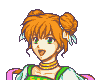

Support Rank C

ララム
ここにいたのか

お義父さま！
・・・あ ちがうっ
ダグラス将軍さま！！
よい この軍にいる者たちになら
わしらの関係を知られてもかまわん
こうして話す機会とて
なかなかとれぬのだ
気など使わず いつものように
父と呼んでくれ
お義父さま・・・
お顔の色が悪いわ
どうかしたの？
お体の調子が悪いんじゃない！？
いや そうではない
確かに少し つかれてはいるがな
あたしで力になれる？
お義父さまのためなら
あたし どんなことだってするわ！
ララム・・・
いいのだ 大丈夫だよ
おまえの顔を見たら
元気がでた
さ もう
いきなさい
お義父さま・・・
Support Rank B
お義父さま！
ララムか
どうしたんだい？
あたしね お義父さまに
元気をだしてもらおうと思って
ララムのスペシャルスタミナ弁当を
作ってきたの！
おお そうかそうか
ありがとう うれしいよ
ウフッ
さ 早く食べて！
今 ここでかい？
将軍職のわしが
戦場のど真ん中で弁当を
広げるわけには・・・
え・・・ あ
ごめんなさい！！
そ そうよね
こんなところでお弁当なんて
お義父さまに恥をかかす
だけよね・・・
あたしって・・・ほんとに
バカなんだから・・・
・・・可愛い一人娘の
心のこもった手作り弁当だ
後にまわして冷めてはバチが
あたるというものだな
やっぱり すぐにいただくとしよう
おお！ これはうまそうだ！！
いいのよ お義父さま！！
無理なんてしないで！
いや 本当にうまいぞ！
なかなかのものだ
お義父さま・・・
これならば いつ嫁にだしても
はずかしくないな ララムよ
もう！ やだわ
お義父さまったら！！
Support Rank A
お義父さま お義父さまぁ！！
なんだい ララム
あたしね 今日こそ
お義父さまを元気いっぱいにする
自信があるの！
ララム・・・おまえの
その気持ちだけで
わしはもう元気づけられたよ
そんなに 無理はしなくても
いいのだよ
無理なんかじゃないわ！
お義父さまが暗い顔をしてると
ララムも 悲しい気持ちになっちゃうし
お義父さまが笑ってたら
ララムも元気全開！！ だもの
おまえは 本当に優しい子だ
・・・ありがとう ララム
お義父さまこそ
こんなあたしを ひろってくれて
育ててくれて ありがとう
あたしね お義父さまの娘になって
はじめて 自分を好きになれたのよ
ララム・・・
あ！ やだっ
お義父さまったら
またシンミリした顔になってる！！
おっと いかんな
さ じゃあ お義父さまに
とびきりの元気をあげるわ！
ララムとっときの踊り
じっくりとごらんあれ